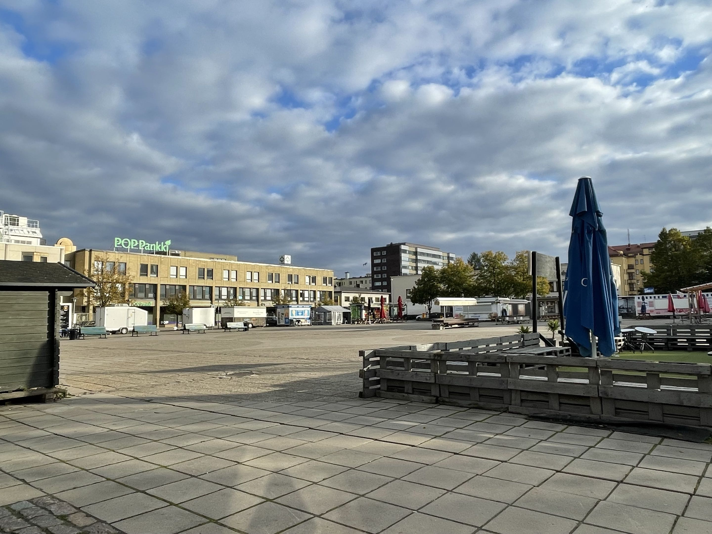
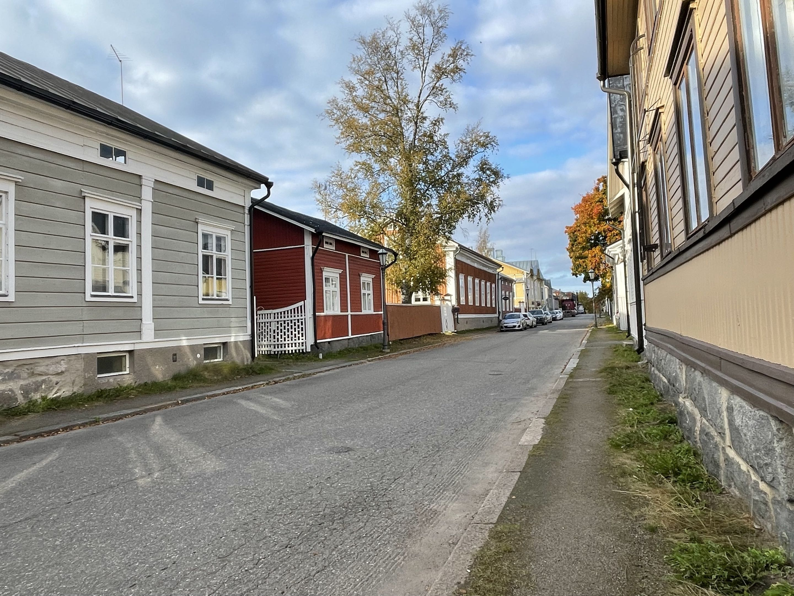
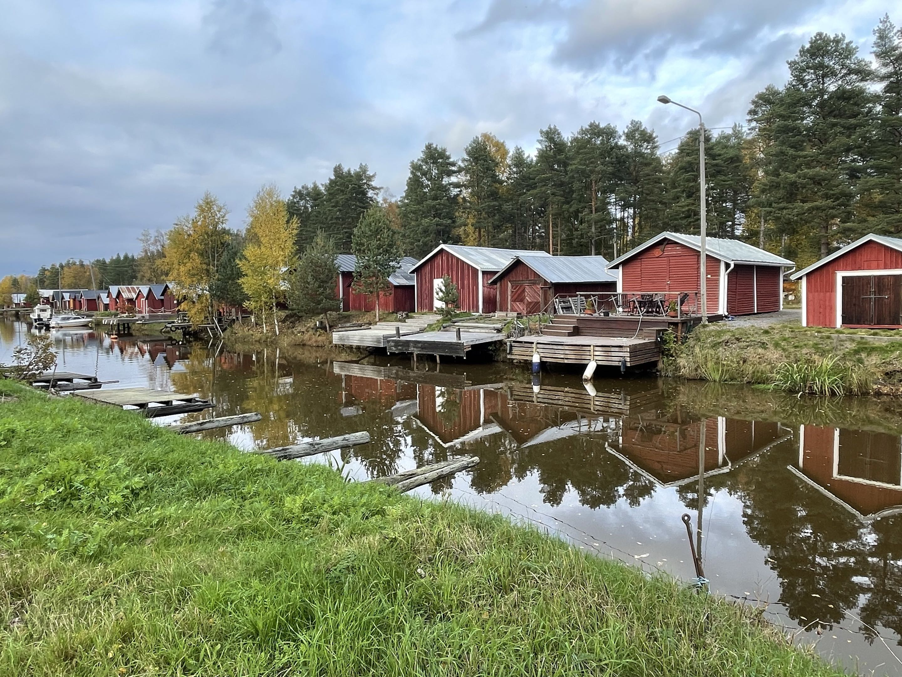

Kokkola
Nähtävyydet
Kauppatori
Kokkolan kauppatori sijaitsee kaupungin keskustassa.

Vanha kaupunki
Kokkolan vanha kaupunki tunnetaan historiallisista puutaloistaan.

Suntin venevajat
Suntin venevajat ovat osa Kokkolan historiallista kaupunkimaisemaa.
